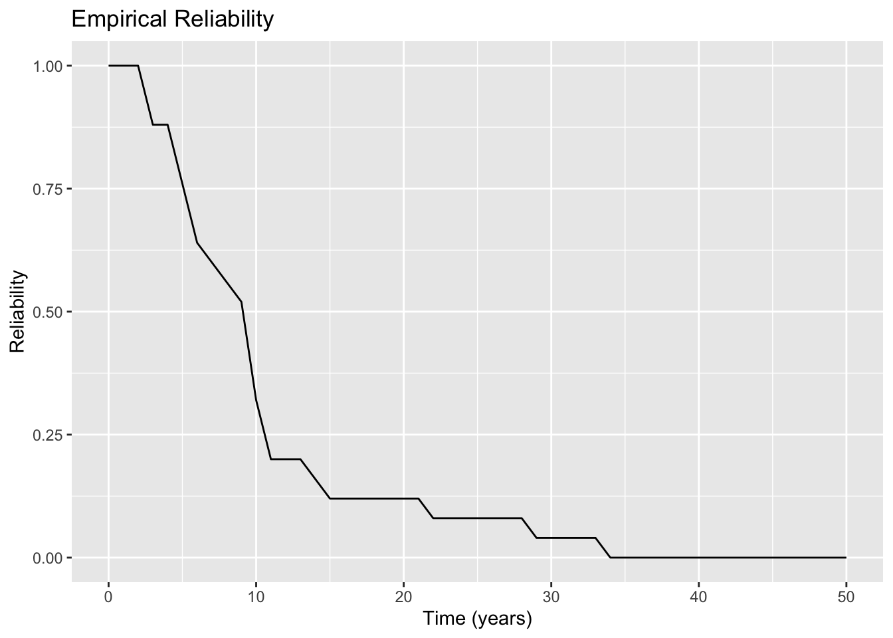
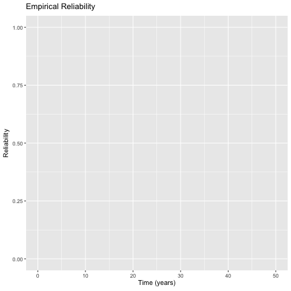
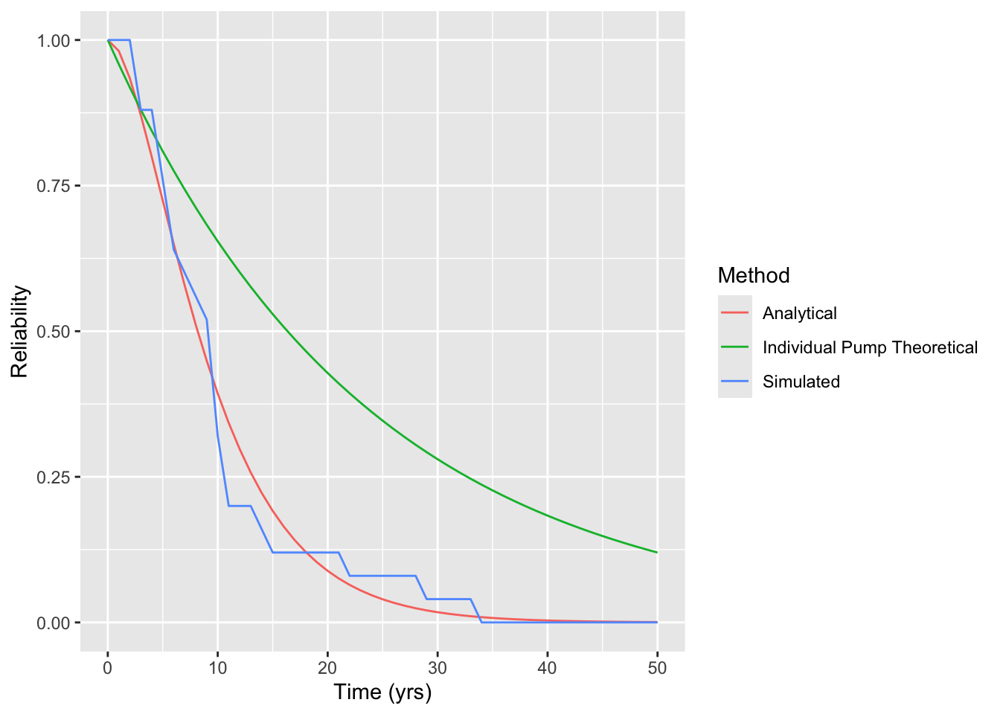

library(tidyverse) # for plotting and data. manipulation
library(fitdistrplus) # for fitting dist to data
library(knitr) # for outputting nice tables
library(gganimate)
library(gifski)
set.seed(1766)HW2 Solution
IE384 Simulation Models in IE
Background
A manager is interested in purchasing a new cooling system for a reactor if it can meet a system reliability goal of 95% reliable over 1.5 years. The system information is as follows:
A cooling system for a reactor has three identical cooling loops. Each cooling loop has two identical pumps connected in series. The cooling system requires that at least 2 of the 3 cooling loops operate successfully.
A two-component series system works if both components work. The series system fails if any one of the system components fails.
The lifetimes (in years) of the pump follows an exponential distribution where a sample of historical failure of the pump data from the manufacturer is as follows:
| 34.3 | 13.9 | 22.9 | 22.5 | 23.6 | 23.9 | 25.6 | 27.5 | 22.7 | 24.7 | 25.4 | 27.4 |
| 22.5 | 12.8 | 15.8 | 33.4 | 24.9 | 21.9 | 25.8 | 23.4 | 15.8 | 21.5 | 28.3 | 25.4 |
1 Part I: Model (50 pts)
Develop a simulation model in R, simulating 25 replications, and answer the following questions:
- Compute the reliability of the cooling system for a mission of 5 years, 10 years, 12 years
- Obtain the expected lifetime of the cooling system.
- Demonstrate the animation of the system reliability values for a period of 10 years.
- Show and print the reliability of the cooling system and the expected lifetime of the cooling system of each replication.
1.1 Fit Data
First we load our packages.
Next we need to fit the specified distribution to the provided data:
failure_data <- c(
34.3, 13.9, 22.9, 22.5, 23.6, 23.9, 25.6, 27.5, 22.7, 24.7, 25.4, 27.4,
22.5, 12.8, 15.8, 33.4, 24.9, 21.9, 25.8, 23.4, 15.8, 21.5, 28.3, 25.4
)
fexp <- fitdist(failure_data, "exp")Now we can define our distribution that we will sample from:
pump_ft <- function(n=1) {
rexp(n=n, fexp$estimate["rate"])
}1.2 Simulate Failures
replicas <- 25
sim_data <- tibble(
A1 = pump_ft(replicas),
A2 = pump_ft(replicas),
B1 = pump_ft(replicas),
B2 = pump_ft(replicas),
C1 = pump_ft(replicas),
C2 = pump_ft(replicas),
)1.3 Determine System Failure Time
First we determine the failure time of each subsystem by taking the minimum failure time of each of the two pumps. We do this with pmin which compares the elements of each column against each other as shown. If we only used min, this would look for the minimum of all values in the columns which would be the shortest failure time of any of the replicas for those two pumps.
sim_data <- sim_data |> mutate(
A = pmin(A1, A2),
B = pmin(B1, B2),
C = pmin(C1, C2),
)Next we put the three subsystem failure times into a vector and sort them so that we can select the second smallest value. Since there are only three subsystems, this is the same as selecting the second largest. For good practice, it is important to be intentional and explicit about which way things are sorted if you are going to extract a certain ordered value. Here I set decreasing = FALSE knowing that the first subsystem fails at sorted_vals[1] and the second subsystem fails at sorted_vals[2].
sim_data <- sim_data |> mutate(
SystemFailureTime = apply(sim_data[, 7:9], 1, function(row) {
# sort the values from
sorted_vals <- sort(row, decreasing = FALSE)
# select the second largest
sorted_vals[2]
})
)1.4 Obtain Empirical Reliability Funciton
Use the ecdf function to create an empirical cumulative distriution function, \(F(t)\) for our system failure times. This represents the probability that the system has failed at a given time, but we want the probability that it is working. This is simply \(R(t) = 1 - F(t)\).
F <- ecdf(sim_data$SystemFailureTime)
R_sim <- function(t) {1 - F(t)}1.5 Solutions
1.5.1 Reliability at 5, 10, 12 years
The relibability for the specified years are given in Table 2 below.
R_mission <- tibble(
Year = c(5, 10, 12),
Simulated = R_sim(Year)
)
kable(R_mission, digits=2)| Year | Simulated |
|---|---|
| 5 | 0.76 |
| 10 | 0.32 |
| 12 | 0.20 |
1.5.2 Expected Cooling System Lifetime
One valid method to calculate the expected lifetime of the system is to average the system failure times from the simulations.
mean_life_system_sim <- mean(sim_data$SystemFailureTime)The expected lifetime is 10.057 years.
Another valid way is using the \(R(t)\) function we made. See the solution in Part II for further details. Essentially, this is discretizing the ecdf and multiplying the probability of taking a given value times that value.
# determine discretization amount
dx = 0.01
# determine maximum life from simulation. R(t > L) = 0 so no need to go beyond
L = quantile(F, 1)
mean_life_system_sim_ecdf <- sum(R_sim(seq(0, L, length.out=L/dx))) * dxThe expected lifetime using the ecdf is 10.061 years.
1.5.3 Animation
Determine how far out we need to animate. We can do this by looking at the data and seeing the maximum lifetime of the system or we could see at what point 100% of the failures occur from the empirical cumulative distribution function, F. Either way, we get around 25 (depending on the results of a given set of simulations). I’ll plot until 35 Figure 1 gives a static plot.
First we can generate a static plot for inclusion in the pdf.
horizon <- seq(0, 50)
R_tbl <- tibble(
Time = horizon,
Reliability = R_sim(Time),
Method = "Simulated"
)
p <- R_tbl |> ggplot(aes(x=Time, y=Reliability, group="Method")) +
geom_line() +
labs(
title = "Empirical Reliability",
x = "Time (years)"
)
p

1.5.4 Show Simulation Results
Now we can animate this plot and save it to our computer by simply adding a transition_reveal element to the plot. Note that eval is set to false so that it isn’t executed when the file is rendered.
```{r, show-results}
#| eval: false
p <- p +
transition_reveal(Time)
anim_save("pump_reliability_anim.gif", p)
```

2 Part II: Analytical Model (50 pts)
Obtain the analytical solutions for the following questions:
- Compute the reliability of the cooling system for a mission of 5 years, 10 years, and 12 years.
- Obtain the expected lifetime of the cooling system.
- Explain and compare the results based on the Simulation model (Part 1) and Analytical model (Part 2).
- Would you recommend the manager to purchase this brand of cooling system? Why?
2.1 Algebraic System Reliability Expression
We need to write an algebraic expression of the system reliability as a function of the individual pump failure times in order to answer these questions. There are a number of ways to do this. For this particular system which fails when the second sub-system fails, I think the easiest way is to write out a boolean table.
First, let the probability that a single pump is working at a given time be \(p\). Later, we will substitute in an expression for the reliability of the pump as a function of time. We will write out a table which shows every possibility where the system is working. We will determine the probability of that scenario occuring, and then sum all those probabilities. This will give us the probability the system is working.
First, I’ll write out the first few rows in Table 3 and discuss them.
| n | A1 | A2 | B1 | B2 | C1 | C2 |
|---|---|---|---|---|---|---|
| 1 | \(p\) | \(p\) | \(p\) | \(p\) | \(p\) | \(p\) |
| 2 | \(p\) | \(p\) | \(p\) | \(p\) | \(p\) | \(1-p\) |
| 3 | \(p\) | \(p\) | \(p\) | \(p\) | \(1-p\) | \(p\) |
| 4 | \(p\) | \(p\) | \(p\) | \(p\) | \(1-p\) | \(1-p\) |
The first rows represents the possibility that all pumps are functioning. Obviously the system is functioning when that is the case. The next three rows represent the ways that pumps from subsystem C can fail while the system still operates. C2 could fail (row 2), just C1 could fail (row 3) or both could fail (row 4). Rows 2 to 4 repeat themselves shifting the failures to system B while C works and then to A while both B and C work as shown in Table 4.
| n | A1 | A2 | B1 | B2 | C1 | C2 |
|---|---|---|---|---|---|---|
| 1 | \(p\) | \(p\) | \(p\) | \(p\) | \(p\) | \(p\) |
| 2 | \(p\) | \(p\) | \(p\) | \(p\) | \(p\) | \(1-p\) |
| 3 | \(p\) | \(p\) | \(p\) | \(p\) | \(1-p\) | \(p\) |
| 4 | \(p\) | \(p\) | \(p\) | \(p\) | \(1-p\) | \(1-p\) |
| 5 | \(p\) | \(p\) | \(p\) | \(1-p\) | \(p\) | \(p\) |
| 6 | \(p\) | \(p\) | \(1-p\) | \(p\) | \(p\) | \(p\) |
| 7 | \(p\) | \(p\) | \(1-p\) | \(1-p\) | \(p\) | \(p\) |
| 8 | \(p\) | \(1-p\) | \(p\) | \(p\) | \(p\) | \(p\) |
| 9 | \(1-p\) | \(p\) | \(p\) | \(p\) | \(p\) | \(p\) |
| 10 | \(1-p\) | \(1-p\) | \(p\) | \(p\) | \(p\) | \(p\) |
2.1.1 Conditional Probability Review
Now we can determine the probability of each scenario occuring. Consider the question of what is the probability of rolling five dice all with the value of 3. We are familiar with this as conditional probability and is solved by multiplying the probabilities together. Let \(X\) represent the random outcome from a single dice roll.
\[ P(X = k) = \frac{1}{6},\ k \in \left\{ 1, 2, 3, 4, 5, 6 \right\} \tag{1}\]
The probability of any roll is the same at \(\frac{1}{6}\). The probability of each dice rolling a specific number (i.e. all dice roll 3, or dice 1 rolls 1, dice 2 rolls 2, etc.) is given as:
\[ P = \prod_{i=1}^5(P(X_i=3)) = \frac{1}{6} \frac{1}{6} \frac{1}{6} \frac{1}{6} \frac{1}{6} = \frac{1}{6^5} = \frac{1}{7776} \approx 0.000128 \approx 0.0128\% \tag{2}\]
2.1.2 Applying Conditional Probability
We can apply that conditional probability to each scenario from the boolean table. Again I’ll do the first few rows and discuss.
| n | A1 | A2 | B1 | B2 | C1 | C2 | System is Functioning |
|---|---|---|---|---|---|---|---|
| 1 | \(p\) | \(p\) | \(p\) | \(p\) | \(p\) | \(p\) | \(p^6\) |
| 2 | \(p\) | \(p\) | \(p\) | \(p\) | \(p\) | \(1-p\) | \(p^5 (1-p)\) |
| 3 | \(p\) | \(p\) | \(p\) | \(p\) | \(1-p\) | \(p\) | \(p^5 (1-p)\) |
| 4 | \(p\) | \(p\) | \(p\) | \(p\) | \(1-p\) | \(1-p\) | \(p^4 (1-p) (1-p)\) |
Some things to note to simplify our work. Rows 2 to 4 will repeat themselves two more times for the case when B has failure(s) but A & C are functioning and where A has failure(s) but B and C are still functioning. We can now express the total system reliability as a function of \(p\) by summing the last column. I omit repeating scenarios 5-7 and 8-10 as I’ve already stated we can just multiply the sum of rows 2-4 by 3 as shown below.
\[ p_{sys} = p^6 + 3\left((p^5 (1-p)) + (p^5 (1-p)) + (p^4 (1-p)^2)\right) \tag{3}\]
2.1.3 Substitute Pump Reliability Expression
We can now substitute in for \(p\) an expression of the pump reliability at a given time. We have that the failure distribution of the pump is:
\[ f_{pump}(t) = \lambda\exp(-\lambda t) \tag{4}\]
This is a common distribution with a known cumulative distribution as given below:
\[ F_{pump}(t) = 1 - \exp(- \lambda t) \tag{5}\]
If we didn’t have this, we could have integrated the pdf (\(f(t)\)) and solved for constants of integration knowing that \(F(0) = 0\).
Equation 5 represents the probability that a pump isn’t working. We want the probability that it is. We get this with:
\[ R_{pump}(t) = 1 - F_{pump}(t) = 1 - (1 - \exp(- \lambda t)) = \exp(- \lambda t) \tag{6}\]
Finally, we can subsitute Equation 6 for \(p\) in Equation 3. Before we do this, it will make things easier to simplify the expression.
\[ p_{sys} = -2p^6 + 3p^4 \tag{7}\]
2.1.4 Obtaining System Reliability Expression
Substituting \(R_{pump}(t)\) for \(p\):
\[ R_{sys}(t) = -2 (\exp(- \lambda t))^6 + 3 (\exp(- \lambda t))^4 \\ \] \[ = -2 \exp(-6 \lambda t) + 3 \exp(-4 \lambda t) \]
We still rely on estimated value for \(\lambda\) from our fexp. We can now write a complete R function which expresses the analytical system reliability as a function of the estimated pump failure time.
lambda <- fexp$estimate["rate"]
R_analytical <- function(t) {
-2 * exp(-6 * lambda * t) + 3 * exp(-4 * lambda * t)
}2.2 Solutions to Questions
2.2.1 Reliability at Specified Times
We can apply our analytical reliabiity function to the table below the same as we did the empirically-based method.
# adding an analytical column and evaluate `R_analytical` on the `Year` col
R_mission <- R_mission |> mutate(
Analytical = R_analytical(Year)
)
# only want to look at the Analytical solutions right now
kable(R_mission[, c("Year", "Analytical")], digits=2)| Year | Analytical |
|---|---|
| 5 | 0.72 |
| 10 | 0.39 |
| 12 | 0.30 |
2.2.2 Expected Cooling System Lifetime
The expected value of a discrete distribution is the sum of the product of the values the distriubtion can take and the probability it takes that value. Let \(X\) represent a distribution which can take values from the discrete set, \(K\).
\[ E[X] = \sum_{k \in K} \left(k \times P(X=k) \right) \tag{8}\]
The continous version of this is achieved by integrating \(x \times f(x)\) over all possible values:
\[ E[X] = \int_{-\infty}^\infty x f(x) dx \tag{9}\]
Integrating by parts leaves us with the result that \(E[X] = \int_{-\infty}^{\infty} R(t)dt\).
Applying that to our system reliability expression, we first want to obtain the indefinite integral of \(R(t)\). Rather than take the integral of the sum, sum the integrals:
\[ \int R(t) dt = \int \left(-2 \exp(-6 \lambda t) + 3 \exp(-4 \lambda t) \right) dt = \int-2 \exp(-6 \lambda t) dt + \int 3 \exp(-4 \lambda t) dt \tag{10}\]
Apply that \(\int e^{cx} dx = \frac{1}{c} e^{cx}\)
\[ \int R(t) dt = \frac{-2}{-6\lambda}e^{-6\lambda t} + \frac{3}{-4\lambda} e^{-4\lambda t} + C \tag{11}\]
We can drop the constant of integration as we will be taking the definite integral from \(-\infty\) to \(\infty\). However, since we are dealing with time to failure and time cannot take a negative value, we will integrate from \(0\) to \(\infty\).
\[ E[X] = \left[ \frac{1}{3\lambda}e^{-6\lambda t} - \frac{3}{4\lambda} e^{-4\lambda t} \right]_0^\infty = [0] - \left[\frac{1}{3\lambda} - \frac{3}{4\lambda}\right] = \frac{5}{12\lambda} \tag{12}\]
mean_life_system_analytical <- 5 / (12 * lambda)The expected life of the system is 9.82 years.
2.2.3 Results Comparison
A comparison of the simulation and analytical based reliabilities for the specified missions is given below in Table 7.
kable(R_mission, digits=2)| Year | Simulated | Analytical |
|---|---|---|
| 5 | 0.76 | 0.72 |
| 10 | 0.32 | 0.39 |
| 12 | 0.20 | 0.30 |
We can see the simulated and analytical solutions give fairly similar results. This serves as confirmation that we implemented both methods correctly.
2.2.4 Recommendation
The manager requires 95% Reliability at 1.5 years. The simulation shows a reliability of 1 while the analytical solution shows a reliability of 0.96. Both of these indicate that the system meets the requirements. However, it is interesting to note that in a system with apparent redundancy, the reliability of the system is actually less than the reliability of each individual pump as seen in Figure 3.
R_tbl <- R_tbl |> bind_rows(
tibble(
Time = horizon,
Reliability = R_analytical(Time),
Method = "Analytical"
)
)
R_pump <- function(t) {exp(-lambda*t)}
R_plot_tbl <- R_tbl |> bind_rows(
tibble(
Time = horizon,
Reliability = R_pump(Time),
Method = "Individual Pump Theoretical"
)
)
rel_plot <- R_plot_tbl |> ggplot(aes(x=Time, y=Reliability, color=Method)) +
geom_line() +
labs(
x = "Time (yrs)",
y = "Reliability"
)
ggsave("reliability_plot.png", rel_plot)
rel_plot

For this reason, I would recommend not buying the system and investigating whether the pumps can be reconfigured in a way that the additional units improve the system reliability rather than detract from it.